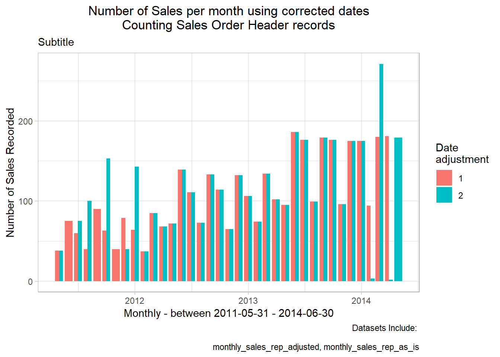
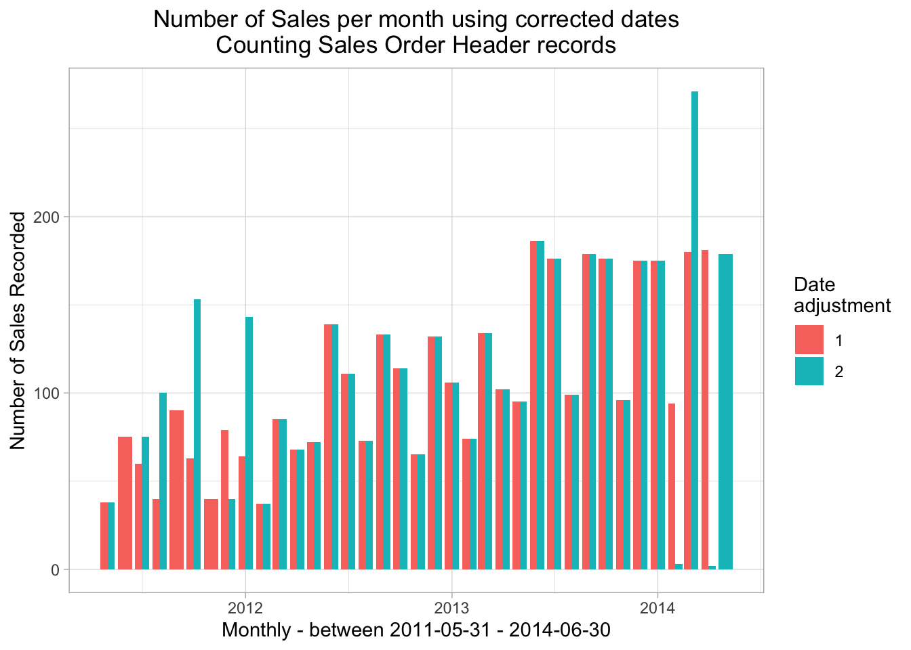
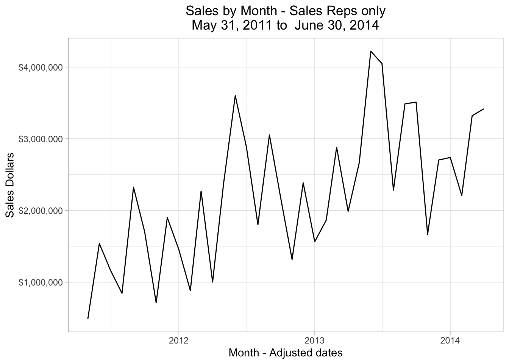

Chapter 8 Asking Business Questions From a Single Table
This chapter explores:
- Issues that come up when investigate a single table from a business perspective
- Some details in one AdventureWorks table containing sales data
- Show the multiple data anomalies found in a single AdventureWorks table
- Suggest the interplay between “data questions” and “business questions”
The previous chapter has demonstrated some of the automated techniques for showing what’s in a table using specific R functions and packages. Now we demonstrate a step-by-step process of making sense of what’s in one table with more of a business perspective. We illustrate the kind of detective work that’s often involved as we investigate the meaning of the data in a table. We’ll investigate the salesorderheader table in the sales schema in this example with an eye on the AdventureWorks business’ sales. We show that there are quite a few interpretation issues even when we are examining just 3 out of the 25 columns in the salesorderheader table.
For this kind of detective work we are seeking to understand the following elements separately and as they interact with each other (and they all do):
- The data that’s stored in the database and how information is represented
- How the data is entered at a day-to-day level to represent business activities
- How the business itself is changing
8.1 Setup our standard working environment
Use these libraries:
library(tidyverse)
library(DBI)
library(RPostgres)
library(connections)
library(glue)
require(knitr)
library(dbplyr)
library(sqlpetr)
library(bookdown)
library(here)
library(lubridate)
library(gt)
library(scales) # ggplot xy scales
theme_set(theme_light())Connect to adventureworks:
sp_docker_start("adventureworks")
Sys.sleep(sleep_default)
con <- dbConnect(
# prefer `connection_open` when running interactively...
RPostgres::Postgres(),
# without the following (and preceding) lines,
# bigint become int64 which is a problem for ggplot
bigint = "integer",
host = "localhost",
port = 5432,
user = "postgres",
password = "postgres",
dbname = "adventureworks"
# seconds_to_test = sleep_default, connection_tab = TRUE
)8.2 A word on naming
You will find that many columns have the same name in an enterprise database. For example, in the adventureworks database, almost all tables have columns named
rowguidandmodifieddateand there are many other examples of names that are reused. The meaning of a column depends on the table that contains it, so as you pull a column out of a table, naming its provenance is important.Naming columns carefully (whether retrieved from the database or calculated) will pay off, especially as our queries become more complex. Using
sohto tag statistics that are derived from thesalesorderheadertable as we do in this book is one example of an intentional naming strategy: it reminds you of the original source of a column. You, future you, and your collaborators will appreciate the effort although different naming conventions are completely valid. And a naming convention when rigidly applied can yield some long and ugly names.In the following example
sohappears in different positions in the column name but it is easy to guess at a glance that the data comes from thesalesorderheadertable.Naming derived tables is just as important as naming derived columns.
8.3 The overall AdventureWorks sales picture
8.4 Annual sales
On an annual basis, are sales dollars trending up, down or flat? We begin with total revenue and number of orders at different levels of detail.
annual_sales <- tbl(con, in_schema("sales", "salesorderheader")) %>%
mutate(year = substr(as.character(orderdate), 1, 4)) %>%
group_by(year) %>%
summarize(
min_soh_orderdate = min(orderdate, na.rm = TRUE),
max_soh_orderdate = max(orderdate, na.rm = TRUE),
total_soh_dollars = round(sum(subtotal, na.rm = TRUE), 2),
avg_total_soh_dollars = round(mean(subtotal, na.rm = TRUE), 2),
soh_count = n()
) %>%
arrange(year) %>%
select(
year, min_soh_orderdate, max_soh_orderdate, total_soh_dollars,
avg_total_soh_dollars, soh_count
) %>%
show_query() %>%
collect()## <SQL>
## SELECT "year", "min_soh_orderdate", "max_soh_orderdate", "total_soh_dollars", "avg_total_soh_dollars", "soh_count"
## FROM (SELECT *
## FROM (SELECT "year", MIN("orderdate") AS "min_soh_orderdate", MAX("orderdate") AS "max_soh_orderdate", ROUND((SUM("subtotal")) :: numeric, 2) AS "total_soh_dollars", ROUND((AVG("subtotal")) :: numeric, 2) AS "avg_total_soh_dollars", COUNT(*) AS "soh_count"
## FROM (SELECT "salesorderid", "revisionnumber", "orderdate", "duedate", "shipdate", "status", "onlineorderflag", "purchaseordernumber", "accountnumber", "customerid", "salespersonid", "territoryid", "billtoaddressid", "shiptoaddressid", "shipmethodid", "creditcardid", "creditcardapprovalcode", "currencyrateid", "subtotal", "taxamt", "freight", "totaldue", "comment", "rowguid", "modifieddate", SUBSTR(CAST("orderdate" AS TEXT), 1, 4) AS "year"
## FROM sales.salesorderheader) "dbplyr_001"
## GROUP BY "year") "dbplyr_002"
## ORDER BY "year") "dbplyr_003"## Classes 'tbl_df', 'tbl' and 'data.frame': 4 obs. of 6 variables:
## $ year : chr "2011" "2012" "2013" "2014"
## $ min_soh_orderdate : POSIXct, format: "2011-05-31" "2012-01-01" ...
## $ max_soh_orderdate : POSIXct, format: "2011-12-31" "2012-12-31" ...
## $ total_soh_dollars : num 12641672 33524301 43622479 20057929
## $ avg_total_soh_dollars: num 7867 8563 3076 1705
## $ soh_count : int 1607 3915 14182 11761Both 2011 and 2014 are shorter time spans than the other two years, making comparison across the years more difficult. We might normalize the totals based on the number of months in each year, but we first graph total dollars.
8.4.1 Total sales by year
ggplot(data = annual_sales, aes(x = year, y = total_soh_dollars)) +
geom_col() +
scale_y_continuous(labels = scales::dollar_format()) +
labs(
title = "Adventure Works Sales Dollars by Year",
x = glue("Year - between ", {format(min_soh_dt, "%B %d, %Y")} , " and ",
{format(max_soh_dt, "%B %d, %Y")}),
y = "Sales $"
)
From 2011 through 2013, sales are trending up. Are sales dollars for 2014 really down? We only have a half year of data, but the 2014 total is less than half of the 2013 total. Could it be that sales are seasonal? Maybe AdventureWorks has larger sales volumes in the fourth quarter. To see if the sales dollars are seasonal, we drill down and look at the monthly sales. But first, let’s look at the number of orders and whether there’s a pattern in the sales data.
8.4.2 Total order volume
Look at number of orders per year:
ggplot(data = annual_sales, aes(x = year, y = as.numeric(soh_count))) +
geom_col() +
geom_text(aes(label = round(as.numeric(soh_count), digits = 0)), vjust = -0.25) +
labs(
title = "Number of orders per year",
x = glue("Years between ", min_soh_dt, " - ", max_soh_dt),
y = "Total Number of Orders"
)
That’s a huge jump in the number of orders between 2012 and 2013. Given the total annual dollars, we ask whether the size of a sale has changed.
8.4.3 Average dollars per sale
ggplot(data = annual_sales, aes(x = year, y = avg_total_soh_dollars)) +
geom_col() +
scale_y_continuous(labels = scales::dollar_format()) +
geom_text(aes(label = round(avg_total_soh_dollars, digits = 0)), vjust = -0.25) +
labs(
title = "Average Dollars per Sale",
x = glue("Year - between ", {format(min_soh_dt, "%B %d, %Y")} , " to ",
{format(max_soh_dt, "%B %d, %Y")}),
y = "Average Sale Amount"
)
That’s a remarkable drop between average sale of more than $7,000 to less than $3,000. Some kind of remarkable change has taken place in this business.
From 2012 to 2013 the average dollars per order dropped from more than $8,500 to nearly $3,000 while the total number of orders shot up from less than 4,000 to more than 14,000. Why are the number of orders increasing, but the average dollar amount of a sale is dropping?
We need to drill down to look at monthly sales, adapting the first query to group by month and year.
8.5 Monthly Sales
Our next investigation drills down from annual sales dollars to monthly sales dollars. For that we download the orderdate, rather than a character variable for the year. R handles the conversion from the PostgreSQL date-time to an R date-time. We then convert it to a simple date with a lubridate function.
monthly_sales <- tbl(con, in_schema("sales", "salesorderheader")) %>%
select(orderdate, subtotal) %>%
collect() %>% # From here on we're in R
mutate(
orderdate = date(orderdate),
orderdate = round_date(orderdate, "month")
) %>%
group_by(orderdate) %>%
summarize(
min_soh_orderdate = min(orderdate, na.rm = TRUE),
max_soh_orderdate = max(orderdate, na.rm = TRUE),
total_soh_dollars = round(sum(subtotal, na.rm = TRUE), 2),
avg_total_soh_dollars = round(mean(subtotal, na.rm = TRUE), 2),
soh_count = n()
)Plotting the monthly sales data:
ggplot(data = monthly_sales, aes(x = orderdate, y = total_soh_dollars)) +
geom_col() +
scale_y_continuous(labels = dollar) +
theme(plot.title = element_text(hjust = 0.5)) + # Center the title
labs(
title = glue("Sales by Month\n", {format(min_soh_dt, "%B %d, %Y")} , " to ",
{format(max_soh_dt, "%B %d, %Y")}),
x = "Month",
y = "Sales Dollars"
)
8.5.1 Check lagged monthly data
The total sales are trending up but suspiciously uneven. Looking at lags might confirm just how much month-to-month difference there is:
monthly_sales_lagged <- monthly_sales %>%
mutate(monthly_sales_change = (lag(total_soh_dollars, 1)) -
total_soh_dollars)## Min. 1st Qu. Median Mean 3rd Qu. Max.
## -1667368.56 -1082792.47 52892.65 18287.07 816048.02 4399378.90
## NA's
## 1The trend is positive on average 18,287 but half of the months have swings greater than 1,898,840!
ggplot(monthly_sales_lagged, aes(x = orderdate, y = monthly_sales_change)) +
scale_x_date(date_breaks = "year", date_labels = "%Y", date_minor_breaks = "3 months") +
geom_line() +
scale_y_continuous(labels = scales::dollar_format()) +
theme(plot.title = element_text(hjust = .5)) + # Center ggplot title
labs(
title = glue(
"Monthly Sales Change \n",
"Between ", {format(min_soh_dt, "%B %d, %Y")} , " and ",
{format(max_soh_dt, "%B %d, %Y")}
),
x = "Month",
y = "Dollar Change"
)## Warning: Removed 1 rows containing missing values (geom_path).
AdventureWorks sales are very uneven. We’ll come back to this issue shortly.
8.5.2 Comparing dollars and orders to a base year
To look at dollars and the number of orders together, we compare the monthly data to the yearly average for 2011.
start_year <- monthly_sales %>%
mutate(yr = year(orderdate)) %>%
group_by(yr) %>%
summarize(
total_soh_dollars = sum(total_soh_dollars),
soh_count = sum(soh_count),
n_months = n(),
avg_dollars = total_soh_dollars / n_months,
avg_count = soh_count / n_months
) %>%
filter(yr == min(yr))Use 2011 as a baseline:
## # A tibble: 1 x 6
## yr total_soh_dollars soh_count n_months avg_dollars avg_count
## <dbl> <dbl> <int> <int> <dbl> <dbl>
## 1 2011 12354206. 1513 7 1764887. 216.Re express monthly data in terms of the baseline and plot:
monthly_sales_base_year_normalized_to_2011 <- monthly_sales %>%
mutate(
dollars = (100 * total_soh_dollars) / start_year$avg_dollars,
number_of_orders = (100 * soh_count) / start_year$avg_count
) %>%
ungroup()
monthly_sales_base_year_normalized_to_2011 <- monthly_sales_base_year_normalized_to_2011 %>%
select(orderdate, dollars, number_of_orders) %>%
pivot_longer(-orderdate,
names_to = "relative_to_2011_average",
values_to = "amount"
)
monthly_sales_base_year_normalized_to_2011 %>%
ggplot(aes(orderdate, amount, color = relative_to_2011_average)) +
geom_line() +
geom_hline(yintercept = 100) +
scale_x_date(date_labels = "%Y-%m", date_breaks = "6 months") +
labs(
title = glue(
"Adventureworks Normalized Monthly Sales\n",
"Number of Sales Orders and Dollar Totals\n",
{format(min_soh_dt, "%B %d, %Y")} , " to ",
{format(max_soh_dt, "%B %d, %Y")}),
x = "Date",
y = "",
color = "% change from\n 2011 average"
)
8.6 The effect of online sales
We suspect that the business has changed a lot with the advent of online orders so we check the impact of onlineorderflag on annual sales. The onlineorderflag indicates which sales channel accounted for the sale, Sales Reps or Online.
8.6.1 Add onlineorderflag to our annual sales query
annual_sales_w_channel <- tbl(con, in_schema("sales", "salesorderheader")) %>%
select(orderdate, subtotal, onlineorderflag) %>%
collect() %>%
mutate(
orderdate = date(orderdate),
orderdate = round_date(orderdate, "year"),
onlineorderflag = if_else(onlineorderflag == FALSE,
"Sales Rep", "Online"
),
onlineorderflag = as.factor(onlineorderflag)
) %>%
group_by(orderdate, onlineorderflag) %>%
summarize(
min_soh_orderdate = min(orderdate, na.rm = TRUE),
max_soh_orderdate = max(orderdate, na.rm = TRUE),
total_soh_dollars = round(sum(subtotal, na.rm = TRUE), 2),
avg_total_soh_dollars = round(mean(subtotal, na.rm = TRUE), 2),
soh_count = n()
) %>%
select(
orderdate, onlineorderflag, min_soh_orderdate,
max_soh_orderdate, total_soh_dollars,
avg_total_soh_dollars, soh_count
)8.6.2 Annual Sales comparison
Start by looking at total sales.
ggplot(data = annual_sales_w_channel, aes(x = orderdate, y = total_soh_dollars)) +
geom_col() +
scale_y_continuous(labels = scales::dollar_format()) +
facet_wrap("onlineorderflag") +
labs(
title = "Adventure Works Sales Dollars by Year",
caption = glue( "Between ", {format(min_soh_dt, "%B %d, %Y")} , " - ",
{format(max_soh_dt, "%B %d, %Y")}),
subtitle = "Comparing Online and Sales Rep sales channels",
x = "Year",
y = "Sales $"
)
Indeed the total sales are quite different as are the number of orders and the average order size!
8.6.3 Order volume comparison
Look at number of orders per year:
ggplot(data = annual_sales_w_channel, aes(x = orderdate, y = as.numeric(soh_count))) +
geom_col() +
facet_wrap("onlineorderflag") +
labs(
title = "Adventure Works Number of orders per Year",
caption = glue( "Between ", {format(min_soh_dt, "%B %d, %Y")} , " - ",
{format(max_soh_dt, "%B %d, %Y")}),
subtitle = "Comparing Online and Sales Rep sales channels",
x = "Year",
y = "Total number of orders"
)
8.6.4 Comparing Sales Rep sales to Online Orders
ggplot(data = annual_sales_w_channel, aes(x = orderdate, y = avg_total_soh_dollars)) +
geom_col() +
facet_wrap("onlineorderflag") +
scale_y_continuous(labels = scales::dollar_format()) +
labs(
title = "Average Dollars per Sale",
x = glue( "Year - between ", {format(min_soh_dt, "%B %d, %Y")} , " - ",
{format(max_soh_dt, "%B %d, %Y")}),
y = "Average sale amount"
)
8.7 Impact of order type on monthly sales
Digging into the difference between Sales Rep and Online sales.
8.7.1 Retrieve monthly sales with the onlineorderflag
This query puts the collect statement earlier than the previous queries.
monthly_sales_w_channel <- tbl(con, in_schema("sales", "salesorderheader")) %>%
select(orderdate, subtotal, onlineorderflag) %>%
collect() %>% # From here on we're in R
mutate(
orderdate = date(orderdate),
orderdate_rounded = round_date(orderdate, "month"),
onlineorderflag = if_else(onlineorderflag == FALSE,
"Sales Rep", "Online"
),
) %>% #
group_by(orderdate, onlineorderflag) %>%
summarize(
min_soh_orderdate = min(orderdate, na.rm = TRUE),
max_soh_orderdate = max(orderdate, na.rm = TRUE),
total_soh_dollars = round(sum(subtotal, na.rm = TRUE), 2),
avg_total_soh_dollars = round(mean(subtotal, na.rm = TRUE), 2),
soh_count = n()
) %>%
ungroup()monthly_sales_w_channel %>%
rename(`Sales Channel` = onlineorderflag) %>%
group_by(`Sales Channel`) %>%
summarize(
unique_dates = n(),
start_date = min(min_soh_orderdate),
end_date = max(max_soh_orderdate),
total_sales = sum(total_soh_dollars)
) %>%
gt()| Sales Channel | unique_dates | start_date | end_date | total_sales |
|---|---|---|---|---|
| Online | 1124 | 2011-05-31 | 2014-06-30 | 29358677.46 |
| Sales Rep | 40 | 2011-05-31 | 2014-05-01 | 80487704.18 |
As we will see later on, the Sales Rep data doesn’t match the Online data. The Online data includes 2 months that are not included in the main sales channel.
8.7.2 Monthly variation compared to a trend line
Jumping to the trend line comparison, we see the source of the variation.
# sp_print_df(monthly_sales_w_channel)
ggplot(
data = monthly_sales_w_channel,
aes(
x = orderdate, y = total_soh_dollars
)
) +
geom_line() +
geom_smooth(se = FALSE) +
facet_grid("onlineorderflag", scales = "free") +
scale_y_continuous(labels = dollar) +
scale_x_date(date_breaks = "year", date_labels = "%Y", date_minor_breaks = "3 months") +
theme(plot.title = element_text(hjust = .5)) + # Center ggplot title
labs(
title = glue(
"Sales by Month by Year"
),
x = glue( "Month - between ", {format(min_soh_dt, "%B %d, %Y")} , " - ",
{format(max_soh_dt, "%B %d, %Y")}),
y = "Sales Dollars"
)## `geom_smooth()` using method = 'gam' and formula 'y ~ s(x, bs = "cs")'
(#fig:average dollars)SO, SO Dollars, and Average SO Dollars-b
The monthly gyrations are happening on the Sales Rep side, amounting to differences in a million dollars compared to small variations of around $25,000.
8.7.3 Compare monthly lagged data by order type
First consider month-to-month change.
monthly_sales_w_channel_lagged_by_month <- monthly_sales_w_channel %>%
ungroup() %>%
group_by(onlineorderflag) %>%
mutate(
pct_monthly_soh_dollar_change =
total_soh_dollars / (lag(total_soh_dollars, 1)) * 100,
pct_monthly_soh_count_change =
soh_count / (lag(soh_count, 1)) * 100
)
ggplot(monthly_sales_w_channel_lagged_by_month, aes(x = orderdate, y = pct_monthly_soh_dollar_change)) +
scale_x_date(date_breaks = "year", date_labels = "%Y", date_minor_breaks = "3 months") +
scale_y_continuous() +
facet_grid("onlineorderflag", scale = "free") +
geom_line() +
theme(plot.title = element_text(hjust = .5)) + # Center ggplot title
labs(
title = glue(
"Monthly Percent Sales Change \n",
"Comparing Online to Sales Rep Sales"
),
x = paste0("Month - between ",
glue({format(min_soh_dt, "%B %d, %Y")} , " - ",
{format(max_soh_dt, "%B %d, %Y")})),
y = "% Dollar Change"
)## Warning: Removed 1 rows containing missing values (geom_path).
## orderdate onlineorderflag min_soh_orderdate
## Min. :2011-05-31 Length:1164 Min. :2011-05-31
## 1st Qu.:2012-03-09 Class :character 1st Qu.:2012-03-09
## Median :2012-12-16 Mode :character Median :2012-12-16
## Mean :2012-12-15 Mean :2012-12-15
## 3rd Qu.:2013-09-24 3rd Qu.:2013-09-24
## Max. :2014-06-30 Max. :2014-06-30
##
## max_soh_orderdate total_soh_dollars avg_total_soh_dollars
## Min. :2011-05-31 Min. : 699.10 Min. : 40.220
## 1st Qu.:2012-03-09 1st Qu.: 13993.27 1st Qu.: 866.710
## Median :2012-12-16 Median : 21469.62 Median : 1823.380
## Mean :2012-12-15 Mean : 94369.74 Mean : 2495.473
## 3rd Qu.:2013-09-24 3rd Qu.: 37256.86 3rd Qu.: 3032.733
## Max. :2014-06-30 Max. :4220928.00 Max. :33245.690
##
## soh_count pct_monthly_soh_dollar_change pct_monthly_soh_count_change
## Min. : 1.00000 Min. : 0.03876 Min. : 1.123596
## 1st Qu.: 6.00000 1st Qu.: 71.57126 1st Qu.: 75.000000
## Median : 10.00000 Median : 100.00000 Median : 100.000000
## Mean : 27.03179 Mean : 598.40406 Mean : 140.916436
## 3rd Qu.: 53.00000 3rd Qu.: 138.22965 3rd Qu.: 130.415373
## Max. :186.00000 Max. :265839.48116 Max. :8950.000000
## NA's :2 NA's :2For Sales Reps it looks like the variation is in the number of orders, not just dollars, as shown in the following plot.
ggplot(monthly_sales_w_channel_lagged_by_month, aes(x = orderdate, y = pct_monthly_soh_count_change)) +
scale_x_date(date_breaks = "year", date_labels = "%Y", date_minor_breaks = "3 months") +
facet_grid("onlineorderflag") +
geom_line() +
theme(plot.title = element_text(hjust = .5)) + # Center ggplot title
labs(
title = glue(
"Monthly Order Volume Change \n",
"Comparing Online to Sales Rep Sales\n",
glue({format(min_soh_dt, "%B %d, %Y")} , " - ",
{format(max_soh_dt, "%B %d, %Y")})
),
x = "Month",
y = "Change number of orders"
)## Warning: Removed 1 rows containing missing values (geom_path).
Let’s examine whether there is a large year-to-year change.
monthly_sales_w_channel_lagged_by_year <- monthly_sales_w_channel %>%
group_by(onlineorderflag) %>%
mutate(
pct_monthly_soh_dollar_change =
total_soh_dollars / (lag(total_soh_dollars, 12)) * 100,
pct_monthly_soh_count_change =
soh_count / (lag(soh_count, 12)) * 100
)
ggplot(
monthly_sales_w_channel_lagged_by_year,
aes(x = orderdate, y = pct_monthly_soh_dollar_change)
) +
scale_x_date(
date_breaks = "year", date_labels = "%Y",
date_minor_breaks = "3 months"
) +
scale_y_continuous(limits = c(-10, 300)) +
facet_grid("onlineorderflag") +
geom_line() +
theme(plot.title = element_text(hjust = .5)) + # Center ggplot title
labs(
title = glue(
"Year-on-Year Total Monthly Sales Change \n",
"Comparing Online to Sales Rep Sales"
),
x = paste0("Month - between ", min_soh_dt, " - ", max_soh_dt),
y = "% Dollar Change"
)## Warning: Removed 12 rows containing missing values (geom_path).
That’s much smaller than the month-to-month change.
??? Comparing the number of sales orders year over year by month for 2013 and 2012, one can see that the 2013 sales are between 1.2 and 1.8 times larger than the corresponding month of 2012 from January through June. In July the 2013 sales are 5 to 6 times the 2012 sales orders. ???
This trend continues into 2014 before the number of sales plummet to just 1.3 time in June.
We suspect that the business has changed a lot with the advent of Online orders.
8.8 Detect and diagnose the day of the month problem
Looking at the raw data leads us to suspect that there is a problem with the dates on which Sales Rep orders are entered.
8.8.1 Sales Rep Orderdate Distribution
Look at the dates when sales are entered for sales by Sales Reps. The following query merits some discussion.
sales_rep_day_of_month_sales <- tbl(con, in_schema("sales", "salesorderheader")) %>%
filter(onlineorderflag == FALSE) %>% # Drop online orders
select(orderdate, subtotal) %>%
mutate(
year = year(orderdate),
month = month(orderdate),
day = day(orderdate)
) %>%
count(year, month, day, name = "orders") %>%
group_by(year, month) %>%
summarize(
days_with_orders = n(),
total_orders = sum(orders, na.rm = TRUE),
min_day = min(day, na.rm = FALSE)
) %>%
show_query() %>%
collect() %>%
mutate(
days_with_orders = as.numeric(days_with_orders),
order_month = as.Date(paste0(year, "-", month, "-01")),
min_day_factor = if_else(min_day < 2, "Month start", "Month end")
) %>%
complete(order_month = seq(min(order_month), max(order_month), by = "month")) %>%
mutate(days_with_orders = replace_na(days_with_orders, 0)) %>%
ungroup()## <SQL>## Warning: Missing values are always removed in SQL.
## Use `MIN(x, na.rm = TRUE)` to silence this warning
## This warning is displayed only once per session.## SELECT "year", "month", COUNT(*) AS "days_with_orders", SUM("orders") AS "total_orders", MIN("day") AS "min_day"
## FROM (SELECT "year", "month", "day", COUNT(*) AS "orders"
## FROM (SELECT "orderdate", "subtotal", EXTRACT(year FROM "orderdate") AS "year", EXTRACT(MONTH FROM "orderdate") AS "month", EXTRACT(day FROM "orderdate") AS "day"
## FROM (SELECT *
## FROM sales.salesorderheader
## WHERE ("onlineorderflag" = FALSE)) "dbplyr_007") "dbplyr_008"
## GROUP BY "year", "month", "day") "dbplyr_009"
## GROUP BY "year", "month"a different strategy for finding the day-of-month problem.
sales_rep_day_of_month_sales <- tbl(con, in_schema("sales", "salesorderheader")) %>%
filter(onlineorderflag == FALSE) %>% # Drop online orders
select(orderdate, subtotal) %>%
mutate(
year = year(orderdate),
month = month(orderdate),
day = day(orderdate)
) %>%
# count(year, month, day, name = "orders") %>%
count(year, month, day) %>%
arrange(year, month) %>%
# filter(year == 2011) %>%
collect() %>%
ungroup() %>%
mutate(n = as.numeric(n))
str(sales_rep_day_of_month_sales)## Classes 'tbl_df', 'tbl' and 'data.frame': 40 obs. of 4 variables:
## $ year : num 2011 2011 2011 2011 2011 ...
## $ month: num 5 7 8 8 10 10 12 1 1 2 ...
## $ day : num 31 1 31 1 31 1 1 29 1 29 ...
## $ n : num 38 75 40 60 63 90 40 64 79 37 ...sales_rep_day_of_month_sales <- sales_rep_day_of_month_sales %>%
pivot_wider(names_from = day, values_from = n, names_prefix = "day_" )
sales_rep_day_of_month_sales %>%
as.data.frame() %>%
select(year, month, day_1, day_28, day_29, day_30, day_31) %>%
filter(!is.na(day_1))## year month day_1 day_28 day_29 day_30 day_31
## 1 2011 7 75 NA NA NA NA
## 2 2011 8 60 NA NA NA 40
## 3 2011 10 90 NA NA NA 63
## 4 2011 12 40 NA NA NA NA
## 5 2012 1 79 NA 64 NA NA
## 6 2014 3 91 NA NA 2 178
## 7 2014 5 179 NA NA NA NAvalues_from integer64 makes pivot_wider barf.
discuss February issues. and stuff.
look at each year sepraately as a diagnostic
Use the same pivot strategy on the corrected data.
difference between detective work with a graph and just print it out. “now I see what’s driving the hint.”
show 2011 in the graph, all years in the printout.
sales_rep_day_of_month_sales %>%
ggplot(aes(order_month, days_with_orders, fill = min_day_factor)) +
geom_col() +
coord_flip() +
labs(
title = "How many days had Sales Rep orders posted",
subtitle = "At the beginning or end of the month?",
fill = "Day Sales were posted",
y = "Number of days with transactions",
x = "Date"
)Suspicious months are those where sales were recorded on more than one day or there were no sales recorded in the month at all.
suspicious_months <- sales_rep_day_of_month_sales %>%
filter(days_with_orders == 0 | days_with_orders > 1) %>%
arrange(order_month) %>%
select(order_month) %>%
unique()months_to_inspect <- tibble(target_month = suspicious_months) %>%
mutate(
current_month = target_month$order_month,
next_month = current_month %m+% months(1),
last_month = current_month %m-% months(1)
) %>%
select(current_month, next_month, last_month) %>%
pivot_longer(cols = tidyselect::peek_vars()) %>%
select(value) %>%
distinct()We have xx months when we add the month before and the month after the suspicious months. We don’t know whether the problem postings have been carried forward or backward. We check for and eliminate duplicates as well.
monthly_sales_w_channel_to_inspect <- monthly_sales_w_channel %>%
filter(onlineorderflag == "Sales Rep") %>%
mutate(order_month = round_date(orderdate, "month")) %>%
right_join(months_to_inspect, by = c("order_month" = "value")) %>%
select(-onlineorderflag, -min_soh_orderdate, -max_soh_orderdate) %>%
arrange(desc(orderdate))
monthly_sales_w_channel_to_inspectThat is unexpected. A couple of things immediately jump out from the first page of data:
- July, September, and November are missing for 2011.
- Most of the Sales Reps’ orders are entered on a single day of the month, unique days = 1. It is possible that these are monthly recurring orders that get released on a given day of the month. If that is the case, what are the Sales Reps doing the rest of the month?
- ** ?? The lines with multiple days, unique_days > 1, have a noticeable higher number of orders, so_cnt, and associated so dollars.?? **
The plot clearly shows that two months with multiple sales rep order days for 2011, (11/08 and 11/10), one for 2012, (1201), and two in 2014, (14/01 and 14/03). The 14/03 is the only three day sales rep order month.
In the next code block, we flesh out the dates associated with the Sales Reps’ orders. Since 4 out of the 5 months with multiple order days only have two dates, the code block captures them with a min/max orderdate.
8.9 Correcting the order date for Sales Reps
dbGetQuery(
con,
"
with udays as (
SELECT to_char(orderdate,'YYMM') yymm
,EXTRACT(YEAR FROM soh.orderdate) yr
, EXTRACT(MONTH FROM soh.orderdate) mo
, COUNT(DISTINCT soh.orderdate) *1.0 unique_days
, COUNT(*) so_cnt
, sum(subtotal) so_dollars
FROM sales.salesorderheader soh
where not onlineorderflag
group by to_char(orderdate,'YYMM')
, EXTRACT(MONTH FROM orderdate)
, EXTRACT(YEAR FROM orderdate)
ORDER BY to_char(orderdate,'YYMM')
)
select soh.orderdate,count(*) from udays
join sales.salesorderheader soh on to_char(soh.orderdate,'YYMM') = udays.yymm
where unique_days > 1
and not onlineorderflag
group by soh.orderdate
having count(*) > 1
order by orderdate
"
)## orderdate count
## 1 2011-08-01 60
## 2 2011-08-31 40
## 3 2011-10-01 90
## 4 2011-10-31 63
## 5 2012-01-01 79
## 6 2012-01-29 64
## 7 2014-01-28 2
## 8 2014-01-29 173
## 9 2014-03-01 91
## 10 2014-03-30 2
## 11 2014-03-31 178The former query misses the Sales Rep sales recorded on the first of the month in the following months:
- 2011-12-01: 40
- 2014-05-01: 179
8.9.1 Define a date correction function in R
This code does the date-correction work on the R side:
monthly_sales_rep_adjusted <- tbl(con, in_schema("sales", "salesorderheader")) %>%
filter(onlineorderflag == FALSE) %>%
select(orderdate, subtotal, onlineorderflag) %>%
group_by(orderdate) %>%
summarize(
total_soh_dollars = round(sum(subtotal, na.rm = TRUE), 2),
soh_count = n()
) %>%
mutate(
orderdate = as.Date(orderdate),
day = day(orderdate)
) %>%
# show_query() %>%
collect() %>%
ungroup() %>%
mutate(
adjusted_orderdate = case_when(
day == 1L ~ orderdate -1,
TRUE ~ orderdate
),
year_month = floor_date(adjusted_orderdate, "month")
) %>%
group_by(year_month) %>%
summarize(
total_soh_dollars = round(sum(total_soh_dollars, na.rm = TRUE), 2),
soh_count = sum(soh_count)
) %>%
ungroup()
str(monthly_sales_rep_adjusted)## Classes 'tbl_df', 'tbl' and 'data.frame': 36 obs. of 3 variables:
## $ year_month : Date, format: "2011-05-01" "2011-06-01" ...
## $ total_soh_dollars: num 489329 1538408 1165897 844721 2324136 ...
## $ soh_count : int 38 75 60 40 90 63 40 79 64 37 ...## # A tibble: 12 x 3
## year_month total_soh_dollars soh_count
## <date> <dbl> <int>
## 1 2011-05-01 489329. 38
## 2 2011-06-01 1538408. 75
## 3 2011-07-01 1165897. 60
## 4 2011-08-01 844721 40
## 5 2011-09-01 2324136. 90
## 6 2011-10-01 1702945. 63
## 7 2011-11-01 713117. 40
## 8 2011-12-01 1900789. 79
## 9 2014-01-01 2738752. 175
## 10 2014-02-01 2207772. 94
## 11 2014-03-01 3321810. 180
## 12 2014-04-01 3416764. 1818.9.2 Define and store a PostgreSQL function to correct the date
The following code defines a function on the server side to correct the date:
dbExecute(
con,
"CREATE OR REPLACE FUNCTION so_adj_date(so_date timestamp, ONLINE_ORDER boolean) RETURNS timestamp AS $$
BEGIN
IF (ONLINE_ORDER) THEN
RETURN (SELECT so_date);
ELSE
RETURN(SELECT CASE WHEN EXTRACT(DAY FROM so_date) = 1
THEN so_date - '1 day'::interval
ELSE so_date
END
);
END IF;
END; $$
LANGUAGE PLPGSQL;
"
)## [1] 08.9.3 Use the PostgreSQL function
If you can do the heavy lifting on the database side, that’s good. R can do it, but it’s best for finding the issues.
monthly_sales_rep_adjusted_with_psql_function <- tbl(con, in_schema("sales", "salesorderheader")) %>%
select(orderdate, subtotal, onlineorderflag) %>%
mutate(
orderdate = as.Date(orderdate)) %>%
mutate(adjusted_orderdate = as.Date(so_adj_date(orderdate, onlineorderflag))) %>%
filter(onlineorderflag == FALSE) %>%
group_by(adjusted_orderdate) %>%
summarize(
total_soh_dollars = round(sum(subtotal, na.rm = TRUE), 2),
soh_count = n()
) %>%
# show_query() %>%
collect() %>%
ungroup() %>%
arrange(adjusted_orderdate)There’s one minor difference between the two:
## [1] "Cols in y but not x: `adjusted_orderdate`. "
## [2] "Cols in x but not y: `year_month`. "monthly_sales_rep_adjusted_with_psql_function %>%
filter(year(adjusted_orderdate) %in% c(2011,2014))## # A tibble: 14 x 3
## adjusted_orderdate total_soh_dollars soh_count
## <date> <dbl> <int>
## 1 2011-05-31 489329. 38
## 2 2011-06-30 1538408. 75
## 3 2011-07-31 1165897. 60
## 4 2011-08-31 844721 40
## 5 2011-09-30 2324136. 90
## 6 2011-10-31 1702945. 63
## 7 2011-11-30 713117. 40
## 8 2011-12-31 1900789. 79
## 9 2014-01-28 1565. 2
## 10 2014-01-29 2737188. 173
## 11 2014-02-28 2207772. 94
## 12 2014-03-30 7291. 2
## 13 2014-03-31 3314519. 178
## 14 2014-04-30 3416764. 1818.9.4 Monthly Sales by Order Type with corrected dates – relative to a trend line
monthly_sales_rep_as_is <- monthly_sales_w_channel %>%
filter(onlineorderflag == "Sales Rep")
ggplot(
data = monthly_sales_rep_adjusted,
aes(x = year_month, y = soh_count)
) +
geom_line(alpha = .5) +
geom_smooth(se = FALSE) +
geom_smooth(
data = monthly_sales_rep_as_is, aes(
orderdate, soh_count
), color = "red", alpha = .5,
se = FALSE
) +
theme(plot.title = element_text(hjust = .5)) + # Center ggplot title
labs(
title = glue(
"Number of Sales per month using corrected dates\n",
"Counting Sales Order Header records"
),
x = paste0("Monthly - between ", min_soh_dt, " - ", max_soh_dt),
y = "Number of Sales Recorded"
)monthly_sales_rep_as_is <- monthly_sales_w_channel %>%
filter(onlineorderflag == "Sales Rep") %>%
mutate(orderdate = as.Date(floor_date(orderdate, unit = "month"))) %>%
group_by(orderdate) %>%
summarize(
total_soh_dollars = round(sum(total_soh_dollars, na.rm = TRUE), 2),
soh_count = sum(soh_count)
)
monthly_sales_rep_as_is %>%
filter(year(orderdate) %in% c(2011,2014))## # A tibble: 10 x 3
## orderdate total_soh_dollars soh_count
## <date> <dbl> <int>
## 1 2011-05-01 489329. 38
## 2 2011-07-01 1538408. 75
## 3 2011-08-01 2010618. 100
## 4 2011-10-01 4027080. 153
## 5 2011-12-01 713117. 40
## 6 2014-01-01 2738752. 175
## 7 2014-02-01 3231. 3
## 8 2014-03-01 5526352. 271
## 9 2014-04-01 1285. 2
## 10 2014-05-01 3415479. 179ggplot(
data = monthly_sales_rep_adjusted,
aes(x = year_month, y = soh_count)
) +
geom_line(alpha = .5 , color = "green") +
geom_point(alpha = .5 , color = "green") +
geom_point(
data = monthly_sales_rep_as_is, aes(
orderdate, soh_count), color = "red", alpha = .5) +
theme(plot.title = element_text(hjust = .5)) + # Center ggplot title
annotate(geom = "text", y = 250, x = as.Date("2011-06-01"),
label = "Green dots: corrected data\nOrange dots: original data\nBrown dots: unchanged",
hjust = 0) +
labs(
title = glue(
"Number of Sales per month \nOriginal and corrected amounts"
),
x = paste0("Monthly - between ", min_soh_dt, " - ", max_soh_dt),
y = "Number of Sales Recorded"
)
mon_sales <- monthly_sales_rep_adjusted %>%
rename(orderdate = year_month)
sales_original_and_adjusted <- bind_rows(mon_sales, monthly_sales_rep_as_is, .id = "date_kind")Does this graph add anything important?
ggplot(
data = sales_original_and_adjusted,
aes(x = orderdate, y = soh_count, fill = date_kind)
) +
geom_col(position = "dodge") +
theme(plot.title = element_text(hjust = .5)) + # Center ggplot title
labs(
title = glue(
"Number of Sales per month using corrected dates\n",
"Counting Sales Order Header records"
),
x = paste0("Monthly - between ", min_soh_dt, " - ", max_soh_dt),
y = "Number of Sales Recorded",
fill = "Date\nadjustment"
) 
additive graph showing how correction adds in some months and subtracts in others.
only show months where there is a mis-match.
ggplot(data = monthly_sales_rep_adjusted, aes(x = year_month, y = total_soh_dollars)) +
geom_line() +
scale_y_continuous(labels = dollar) +
theme(plot.title = element_text(hjust = 0.5)) + # Center the title
labs(
title = glue("Sales by Month - Sales Reps only\n", {format(min_soh_dt, "%B %d, %Y")} , " to ",
{format(max_soh_dt, "%B %d, %Y")}),
x = "Month - Adjusted dates",
y = "Sales Dollars"
)
Sales still seem to gyrate!